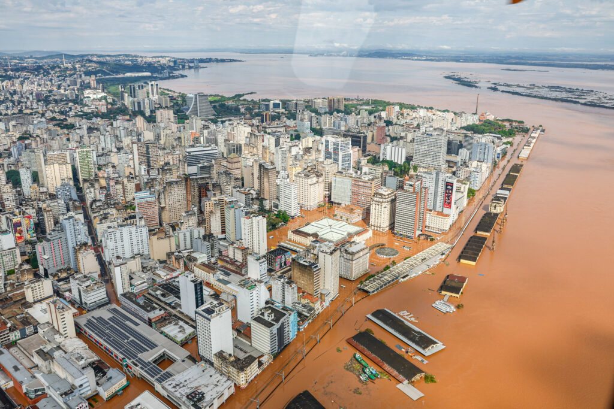
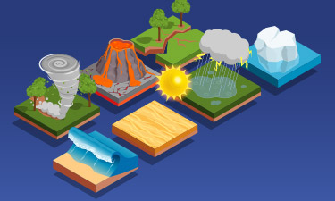
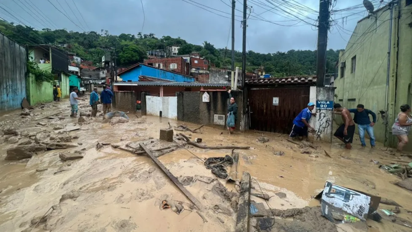
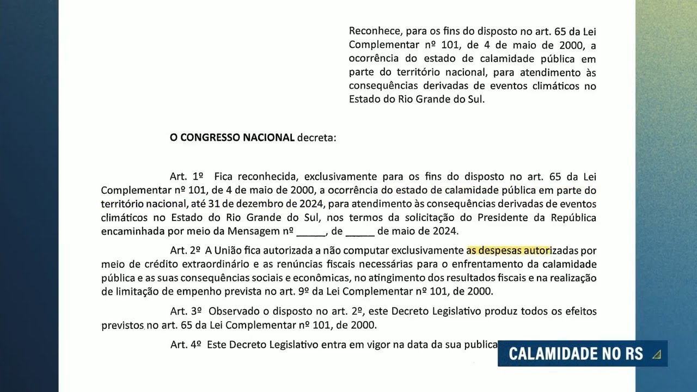
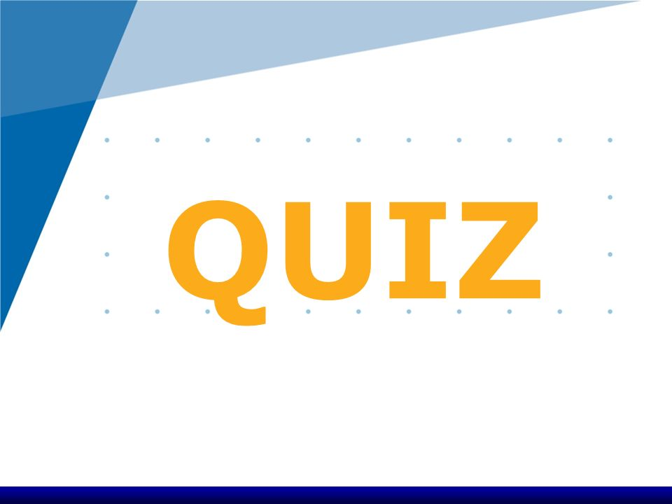

Olá! Neste OVA, vamos explorar o conceito de calamidade pública. Você já se perguntou o que acontece quando um desastre natural ou uma crise atinge uma cidade ou região de forma tão intensa que a capacidade do governo local de lidar com a situação fica comprometida? É nesse contexto que surge a declaração de calamidade pública.
O que é Calamidade Pública?

O que é Calamidade Pública, e qual sua diferença entre a Emergência?
Calamidade pública é uma situação anormal, provocada por desastres (naturais ou provocados pelo homem), que causa danos e prejuízos tão grandes que a capacidade de resposta do poder público é sobrecarregada.
Causas de uma Calamidade Pública

As causas de uma calamidade pública são diversas e podem incluir:
- Desastres naturais: Terremotos, tsunamis, furacões, enchentes, secas, incêndios florestais.
- Desastres provocados pelo homem: Acidentes industriais, vazamentos tóxicos, guerras, pandemias.
Consequências de uma Calamidade Pública

As consequências de uma calamidade pública são muitas e podem afetar diversos aspectos da vida da população:
- Perdas humanas: Mortes e feridos.
- Danos materiais: Destruição de casas, escolas, hospitais, infraestrutura.
- Prejuízos econômicos: Perda de empregos, interrupção de atividades comerciais.
- Crises sociais: Falta de alimentos, água potável, energia elétrica, serviços de saúde.
Declaração de Calamidade Pública

Quando um desastre atinge uma determinada região e causa danos significativos, as autoridades competentes podem declarar estado de calamidade pública. Essa declaração permite que o governo mobilize recursos e medidas especiais para atender às necessidades da população afetada.
Quiz Final

Agora que você leu sobre calamidade pública, é hora de testar seus conhecimentos com um quiz!